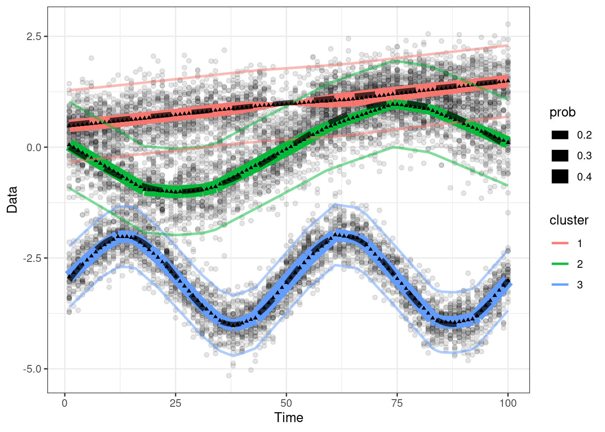

14 Testing the flowtrend method
We’re going to assume the flowtrend() function has been built. We’re going to
test it now.
library(tidyverse)
devtools::load_all("~/repos/FlowTF")
litr::load_all("index.Rmd")14.1 1d example
## Generate data
set.seed(100)
dt <- gendat_1d(100, rep(100, 100), die_off_time = 0.45)
dt_model <- gendat_1d(100, rep(100, 100), die_off_time = 0.45, return_model = TRUE)
ylist = dt %>% dt2ylist()
x = dt %>% pull(time) %>% unique()
## Fit model
set.seed(18)
obj <- flowtrend(ylist = ylist,
x = x,
maxdev = 5,
numclust = 3,
lambda = 0.02,
l = 1,
l_prob = 2,
lambda_prob = .005,
nrestart = 3)
## Also reorder the cluster labels of the truth, to match the fitted model.
ord = obj$mn[,1,] %>% colSums() %>% order(decreasing=TRUE)
lookup <- setNames(c(1:obj$numclust), ord)
dt_model$cluster = lookup[as.numeric(dt_model$cluster)] %>% as.factor()
## Reorder the cluster lables of the fitted model.
obj = reorder_clust(obj)The objective value (that is, the penalized log likelihood) should be monotone across EM algorithm iterations.
testthat::test_that("Objective value decreases over EM iterations.",{
devtools::load_all("~/repos/FlowTF")
## for(iseed in 1:5){
for(iseed in 1){
## Generate increasingly noisy data
set.seed(iseed*100)
dt <- gendat_1d(100, rep(100, 100), die_off_time = 0.2)
dt$Y = dt$Y + rnorm(nrow(dt), 0, iseed/2)
ylist = dt %>% dt2ylist()
x = dt %>% pull(time) %>% unique()
## Fit model
set.seed(0)
obj <- flowtrend(ylist = ylist,
x = x,
maxdev = 5,
numclust = 3,
lambda = 0.02,
l = 1,
l_prob = 2,
## lambda_prob = .5,
lambda_prob = 0.05,
nrestart = 1)
## Test objective monotonicity
testthat::expect_true(all(diff(obj$objective) < 0))
}
})## i Loading FlowTF## Test passed 🎊(TODO: resolve the issue of the objective value sometimes rising!)
While the slight rise in objective value is not egregious, I would like to get
to the bottom of this. The next code block shows a self-contained example of the
objective value rising. I didn’t stop the algorithm (allowing the full
niter=200 iterations) to see if it increases. Now I wonder – is it due to
glmnet? If we use CVXR, will it go away?
litr::load_all("~/repos/flowtrend/index.Rmd")
devtools::load_all("~/repos/FlowTF")
iseed = 1
set.seed(iseed * 100)
dt <- gendat_1d(100, rep(100, 100), die_off_time = 0.2)
dt$Y = dt$Y + rnorm(nrow(dt), 0, iseed/2)
ylist = dt %>% dt2ylist()
x = dt %>% pull(time) %>% unique()
## Fit model
set.seed(0)
obj <- flowtrend(ylist = ylist,
x = x,
maxdev = 5,
numclust = 3,
lambda = 0.02,
l = 1,
l_prob = 2,
lambda_prob = 0.05,
nrestart = 1,
niter = 200,
verbose = TRUE) ## TODO: remember to comment out the convergence check!!
objectives = obj$objective
for(iter in 2:200){
if(check_converge_rel(objectives[iter-1], objectives[iter], tol = 1E-4)) break
}
stopping_iter = iter
print(range(diff(obj$objective)))
plot(obj$objective, type ='l', xlim = c(0,50))
abline(v=iter, lty = 'dotted')
abline(h=min(obj$objective), lty = 'dotted', col = 'blue')
plot(diff(obj$objective), type ='l', ylim = c(-0.001, 0.0005))
abline(h=0, col = 'blue', lty = 'dotted')The data and estimated model are shown here.
plot_1d(ylist, obj, x = x) +
geom_line(aes(x = time, y = mean, group = cluster),
data = dt_model,## %>% subset(time %ni% held_out),
linetype = "dashed", size=2, alpha = .7)## Warning: The `x` argument of `as_tibble.matrix()` must have unique column names if
## `.name_repair` is omitted as of tibble 2.0.0.
## ℹ Using compatibility `.name_repair`.
## ℹ The deprecated feature was likely used in the litr package.
## Please report the issue to the authors.## Joining, by = c("time", "cluster")## Warning in geom_line(aes(x = time, y = mean, size = prob, group = cluster), : Ignoring unknown parameters: `shape`
The estimated probabilities are shown here.
plot_prob(obj) +
geom_line(aes(x = time, y = prob, group = cluster, color = cluster),
data = dt_model, linetype = "dashed") +
facet_wrap(~cluster)
14.2 1d example with gap
Repeating this exercise with data that has a gap (between times 25 and 35).
held_out = 25:35
dt_subset = dt %>% subset(time %ni% held_out)
ylist = dt_subset %>% dt2ylist()
x = dt_subset %>% pull(time) %>% unique()
## Fit model
set.seed(0)
obj <- flowtrend(ylist = ylist,
x = x,
maxdev = 5,
numclust = 3,
lambda = 0.02,
l = 1,
l_prob = 2,
lambda_prob = .005,
nrestart = 2)
## Also reorder the cluster labels of the truth, to match the fitted model.
ord = obj$mn[,1,] %>% colSums() %>% order(decreasing=TRUE)
lookup <- setNames(c(1:obj$numclust), ord)
dt_model$cluster = lookup[as.numeric(dt_model$cluster)] %>% as.factor()
## Reorder the cluster lables of the fitted model.
obj = reorder_clust(obj)No model estimates are being made at the gap (between 25 and 35)! The model
estimates (the solid colored lines) are automatically generated by
ggplot::geom_line(). But actually, linear interpolation is what we’ll want to
do when making predictions at new time points. There’s more about this shortly.
TODO: This blob is a bit outdated. We’ve already built the predict_flowtrend() function.
plot_1d(ylist, obj, x = x) +
geom_line(aes(x = time, y = mean, group = cluster),
data = dt_model,## %>% subset(time %ni% held_out),
linetype = "dashed", size=2, alpha = .7)## Joining, by = c("time", "cluster")## Warning in geom_line(aes(x = time, y = mean, size = prob, group = cluster), : Ignoring unknown parameters: `shape`